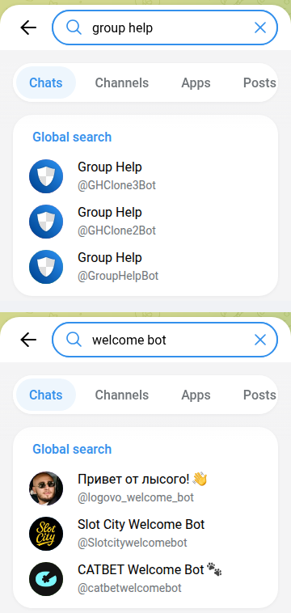

Telegram Bots for Groups: I Opened 115, Only 20 Work
Search Telegram for “welcome bot” and two of the top three results are casino bonus bots. Search “group bot” and you get a crypto wallet, a construction company and a restaurant’s feedback form. Search “group help” and you get three bots with the same name and the same shield icon, and no way to tell which one is the original.
So on 14 October 2026 I ran 12 searches for the jobs people add bots to a group for: moderation, anti-spam, captcha, welcome messages, stats, polls, reminders, translation. I took every bot that came back, added every bot the top web lists recommend, and sent each one /start. 115 bots. 20 of them are a group tool that answers. 60 never replied. 25 are someone else’s private bot, 5 are copies of one popular bot, and 2 are casinos.
This page is about bots that run a group. If you want games for the group chat, that’s a different list: Telegram party games, tested.

The results
| What came back | Bots | What that means |
|---|---|---|
| Works: a group tool that answers | 20 | Moderation, captcha, anti-spam, polls, reminders, feeds. 13 from Telegram search, 7 from web lists |
| Silent | 60 | No reply to /start within 10 seconds |
| Someone else’s private bot | 25 | A business, a course, a paid channel or one community’s gatekeeper. It has “group” or “admin” in the name, but it isn’t for your group |
| Copies of Group Help | 5 | Group Help’s welcome text word for word, under a different name |
| Casino | 2 | “Welcome bots” that hand out a casino sign-up bonus |
| Other | 3 | Work, but for one person, not a group (two Georgian transliterators, a birthday reminder) |
Why so much noise: Telegram’s search for public accounts, contacts.search, “returns users found by username substring”. It doesn’t know what a bot does. A bot called APF_Group_bot comes up for “group bot”. When I pressed Start, it opened a crypto wallet with Deposit, Exchange and My wallet buttons and showed me a freshly created account. Nothing about groups.
Adding “GroupHelpBot” adds a different bot
Group Help is the biggest group bot in this test by a long way. Five bots share the name, and together they show 7,989,691 monthly users on their profiles:
| Bot | Monthly users | Profile says |
|---|---|---|
| @GHClone1Bot | 2,888,537 | “Official @GroupHelpBot clone.” |
| @GroupHelpBot | 2,644,927 | “This is the most complete Bot to help you manage your groups…” |
| @GHClone5Bot | 1,505,483 | “Official @GroupHelpBot clone.” |
| @GHClone3Bot | 581,553 | “Official @GroupHelpBot clone.” |
| @GHClone2Bot | 369,191 | “Official @GroupHelpBot clone.” |
A clone has more users than the original, and the welcome screen explains why. All five reply to /start with the same message and the same buttons. The first button is “Add me to a Group”, and in every one of them, including @GroupHelpBot itself, that button links to t.me/GHClone1Bot?startgroup=start. Open GroupHelpBot, tap Add, and the bot that joins your group is @GHClone1Bot.
That isn’t a scam. Group Help hints at the reason itself. Introducing two extra security bots on its own blog, it says bots “cannot do more than X actions in X amount of time” and that each extra bot “will halve the load of the main clone”. Telegram’s Bot FAQ gives the number: “In a group, bots are not be able to send more than 20 messages per minute.” (The typo is Telegram’s.) A bot that runs millions of groups has to be several bots. It does mean the name on the bot you add isn’t the name you searched for. Check the member list after adding it, so you know which bot to give admin rights to.
Five more bots wearing Group Help’s welcome
Five other bots in the test answered /start with Group Help’s welcome word for word. The only difference was “GroupHelpBot is” where the originals say “Group Help is”. They had the same buttons, and their Add button also pointed to @GHClone1Bot: @ManagerStoomApi_bot, @ModerationPBCHAT_Bot, @Samodel_Official_Bot, @dtiua_grouphelpbot and @jh0ker82_welcomebot. None of them shows a monthly-users number. I can’t tell from outside who runs them or what happens if you add the bot itself instead of pressing its button. What I can tell you is that you don’t need them: the five originals above do the same job and say who they are.
“Welcome bot” finds casinos
The top three Telegram results for “welcome bot” were a persona bot with 34,842 monthly users that didn’t answer, then @Slotcitywelcomebot and @catbetwelcomebot. Both are online casinos. Each greeted me with a mascot (“Cash” and a cat called Bet), a Claim bonus button to the casino’s sign-up page and a request to subscribe to their channel. In those brands’ language, a “welcome bot” welcomes you as a new player. It doesn’t greet new members in your group.
None of the nine “welcome bot” results was a dedicated greeting bot that answered: four were silent, two were casinos, two were gatekeepers for someone’s own community, and one was a Group Help copy. If you want new members greeted, a moderation bot may already do it: ChatKeeper lists greetings in its first reply.
The 20 that work
| Bot | Job | Monthly users | Reads every message? |
|---|---|---|---|
| @GroupHelpBot (+ 4 official clones) | Group management: add as admin, set up with /settings | 7.99M together | As admin, yes |
| @combot | Moderation, analytics, anti-spam, reputation, XP levels | 760,248 | Yes |
| @ChatKeeperBot | Moderation, stats, captcha, greetings | 537,094 | Yes |
| @Customize_Captcha_Bot | Captcha with your own questions (Chinese interface) | 144,797 | Yes |
| @MasterPoll_Bot | Poll builder | 117,379 | Yes, without needing to |
| @newfileconverterbot | File conversion (not group-specific) | 55,289 | No |
| @join_captcha_bot | Captcha for new members, removes anyone who fails | 17,288 | Yes |
| @captcha_simple_bot | Free anti-spam captcha | — | Yes |
| @UaAntiSpam_bot | Ukrainian anti-spam: blocks posts about troop movements, strike locations and phishing | — | As admin, yes |
| @Kwitka_Antispam_Bot | Ukrainian AI moderator: spam, flood and, in its own words, Russian-language messages | — | Yes |
| @tgdraw_bot | Giveaways, polls and quizzes as a Mini App | — | Yes, without needing to |
| @KindlyRemindlyBot | Reminders from voice or text | — | Yes, without needing to |
| @alertbot | Simple reminders: /alert 3h text | — | No |
| @TheFeedReaderBot | Posts new items from RSS feeds and YouTube channels | — | No |
| @ifttt | Connects a group to other services (needs an IFTTT account) | — | No |
| @zoombot | Zoom meetings from a chat (needs a Zoom login) | — | Yes, without needing to |
That’s 16 rows for 20 bots, because the five Group Help bots share one. “Reads every message?” is each bot’s own privacy-mode setting, read from its profile through Telegram’s API. I didn’t add any of them to a group. Everything here comes from the bot’s first reply, its profile and Telegram’s documentation.
Running a group chat that needs something to do?
The free Party Game runs Truth or Dare, Never Have I Ever and Would You Rather as a Mini App inside Telegram. Nothing to add to the group, no admin rights, nothing that reads your chat.
Open the Party Game No Telegram? It runs in a browser too: charliemorrison.dev/party-gameWhich bots read your whole group
By default a bot in a group sees very little. Telegram’s bot documentation says it gets only commands meant for it, replies to its own messages and a few service messages. Two things change that, and the documentation names both: “Privacy mode is enabled by default for all bots, except bots that were added to a group as admins (bot admins always receive all messages).” The other is a bot whose owner turned privacy mode off. Telegram’s advice to owners is blunt: “We only recommend doing this in cases where it is absolutely necessary for your bot to work.”
37 of the 115 bots in this test have privacy mode off. For a moderation bot it makes no difference: it has to be an admin to delete spam, and an admin bot sees everything anyway. But four of the working bots have it off for jobs that don’t need it: a poll builder, a giveaway tool, a reminder bot and Zoom. Add one of those as a regular member and it still receives every message in the group.
You can check this yourself after adding a bot. Telegram’s documentation says “Users can always see a bot’s current privacy setting in the list of group members.”
What the web lists recommend
I also took every handle from the top “bots for groups” pages on the web. Only one of the three I read names specific bots: all ten from AirDroid’s top 10 went in. The other two list categories and their own product. I added @DrWebBot, a link scanner whose profile says it can be added to a group to check shared links and files. 7 of 11 answered. The four that didn’t were AirDroid’s poll bot, translation bot and media downloader, and @DrWebBot, which still shows 18,032 monthly users on its profile.
The web picks did better than Telegram search: 7 of 11 against 13 of 104. Even so, a list that names a bot doesn’t prove anyone has pressed Start on it this year.
How to pick a group bot that works
- Open it in a private chat first. Send
/startand wait ten seconds. 60 of 115 never replied. A bot that ignores you in private won’t do better in your group. - Look for a monthly-users number on the profile. 11 of the 20 working bots showed one. Only 3 silent bots did.
- Read what the first screen asks for. A sign-up bonus, a deposit button or “subscribe to our channel” means it isn’t a group tool, whatever its name says.
- Search for the job, then check the name. “captcha bot” and “anti spam bot” found working tools. “group bot” and “welcome bot” found businesses and casinos.
- After adding a bot, open the member list. Check that the bot that joined is the one you meant (Group Help adds @GHClone1Bot), and check its privacy setting, which Telegram shows in that list.
- Give admin rights only to bots that delete or ban. A poll or reminder bot doesn’t need to be admin, and an admin bot receives every message.
Game night without adding another bot
The Telegram Party Pack is plain text you paste into the chat: 110 Truth or Dare, 45 Never Have I Ever, 30 Would You Rather, 30 Most Likely To, 25 Paranoia and 15 Story Chain prompts, with ready-made poll blocks and a host guide. No bot to add, no permissions to give.
Get the pack — $9.99Frequently asked questions
What is the best Telegram bot for groups?
For moderation, the bots with the most users that answered on 14 October 2026 were Group Help (7.99 million monthly users across its five official bots), Combot (760,248) and ChatKeeper (537,094). For captcha only, @join_captcha_bot and @captcha_simple_bot both answered.
Why does Group Help add @GHClone1Bot instead of @GroupHelpBot?
Every Group Help bot’s “Add me to a Group” button links to @GHClone1Bot. Group Help hasn’t said why in its bot replies, but its blog notes that Telegram limits how many actions one bot can take, and Telegram’s Bot FAQ caps a bot at 20 messages per minute in a group. Spreading groups across several bots gets around that.
Can a Telegram bot read all messages in my group?
Yes, if it’s an admin or its owner turned privacy mode off. Otherwise it only sees commands and replies meant for it. Telegram shows each bot’s setting in the group’s member list. In this test, 37 of 115 bots had privacy mode off.
How do I find a Telegram bot for my group?
Search Telegram for the job plus “bot”, like captcha bot or anti spam bot, then open each result privately and send /start. Search matches names, not purpose, so “group bot” also returns company bots, wallets and casinos.
Related reading
- Telegram party games for groups, tested
- Fun Telegram bots: 117 opened, 16 work
- Telegram translator bots: 78 tested, 7 translated
- Telegram reminder bots: 82 checked, 3 actually remind you
- Telegram inline bots list: 38 tested, 28 still work
- Anonymous Telegram bots: 11 tested
- Telegram AI bots: 91 tested, the only verified one is off